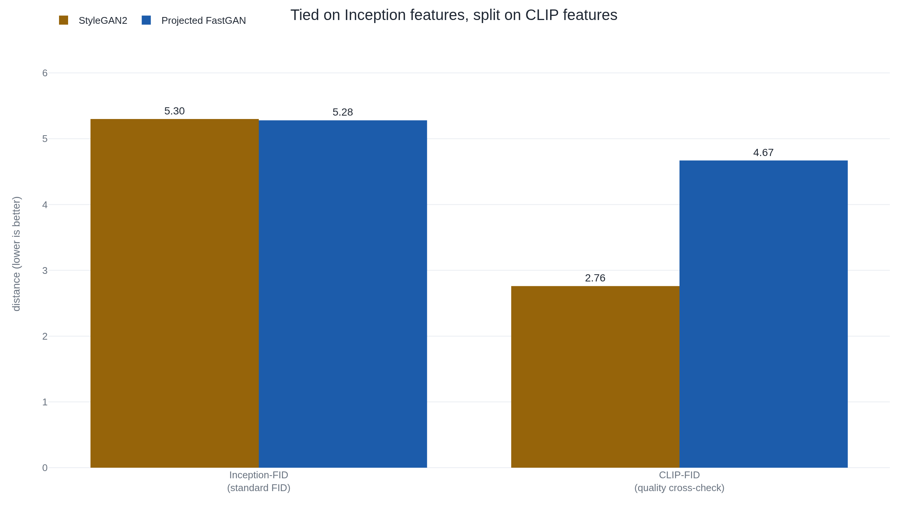

FID tied two face generators that a second yardstick and human eyes told apart
The score behind "this generator makes better images" is a distance between two bell-curve summaries of what an ImageNet network sees, and you can move it a long way without changing a single picture.
Why this matters
Whenever one image generator is said to beat another, a single number is usually doing the work, and most often that number is FID. It sits under "state of the art" in research papers and under "sharper images" in product announcements. This lesson builds FID from the image up: what it reads out of a picture, what shape it fits to it, and what it measures between two piles of images. Then it runs the same recipe a second way to find the places the number moves while the pictures hold still. Work through both passes and you can follow FID's calculation yourself, from an image to a score, and read a reported FID gap knowing whether the sample count, the feature network, or the resizing had room to move it.
- 01
- A chatbot slices your photo into a few hundred squares and turns each into a word: how a network turns an image into a list of numbers, the step FID runs before it measures anything.
- 02
- The GAN paper credited with deepfakes generated blurry thumbnails: the generators FID is built to judge, and the metric their own authors distrusted.
A record broken forty times faster
In 2021 a method called Projected GAN reported advancing the best known Fréchet Inception Distance on twenty-two image datasets at once, and reaching the previously lowest scores up to forty times faster, cutting a training run from about five days to under three hours.1 Fréchet Inception Distance, FID, is the standard yardstick for how close a generator's output comes to real images, and across the field a lower FID is read as better pictures. A method that matches the record in three hours instead of five days looks like something for nothing. Whether it is depends entirely on what the yardstick measures, and FID is one number produced by a fixed recipe you can follow from the images all the way to the score.
From two piles of images to one distance
FID never compares images to each other directly. It starts from two piles: a pile of real photographs and a pile the generator produced. Every image in both piles goes through the same network, Inception-v3, a model trained to sort photographs into the thousand categories of the ImageNet dataset. (For how a network turns an image into a list of numbers, see how a chatbot reads a photo.) FID throws away the category the network would name. It reaches into the last pooling layer and copies out the 2048 numbers sitting there, the image's code.2
Now it has two clouds of points, one per pile, each point a list of 2048 numbers. FID summarizes each cloud as a single multivariate Gaussian, a bell-shaped blob described by two things: a mean, the cloud's center, which is a 2048-number average; and a covariance, how the cloud is stretched and tilted around that center. The original paper defends the Gaussian as the maximum-entropy choice, meaning that among all the shapes a cloud with a given center and spread could take, the Gaussian assumes the least beyond those two facts.2 It is a convenient summary with a cost, and later work argues the cost is real: Inception's features are not actually Gaussian.3
With each pile reduced to one Gaussian, FID reports the Fréchet distance between them, also called the Wasserstein-2 distance. The picture to keep is earth-moving. If each Gaussian were a pile of sand, the distance is the least work needed to reshape the real pile into the generated one: pay once to shift its center, and again to rework its spread. Written out, those are the two terms of the formula.
- \lVert m - m_w \rVert_2^2the squared gap between the two clouds' centers: the real mean m and the generated mean m_w.
- \operatorname{Tr}(C + C_w - 2(C C_w)^{1/2})how differently the two clouds are spread and tilted, read off their covariances C and C_w.
Nothing in either term looks at a single picture on its own. FID only ever compares the two clouds as wholes, which is what leaves room for the pictures to stay fixed while the number moves.
Two generators the number called even
Here is the recipe running on a real comparison. On FFHQ, a standard set of human faces, Projected FastGAN scores an FID of 5.28 and StyleGAN2 scores 5.30.4 By FID they are even, and the faster, cheaper method is nominally the winner. Now run the same distance a different way. Swap Inception's 2048 features for the features of CLIP, a network trained on image-caption pairs rather than ImageNet labels, and compute the identical Fréchet distance. The tie collapses: StyleGAN2 scores 2.76, Projected FastGAN 4.67, StyleGAN2 well ahead.4 Set the faces side by side and people see what the CLIP number sees: the FastGAN samples carry more visible distortion.4

The Projected GAN paper's headline was a record FID reached cheaply.1 Kynkäänniemi and colleagues showed that part of that record sits in what they call the perceptual null space: FID moved, the pictures did not.4
Why does changing the network change the ranking? Inception-v3 was trained to name ImageNet classes, so its 2048 numbers mostly encode which ImageNet class an image resembles, and that hands you a direct lever on FID. Take the generated set and adjust it so its histogram of top ImageNet guesses matches the real set's, and FID falls. On FFHQ it drops from 5.30 to 4.70 by matching the single top class, and to 1.78 by matching deeper features, a two-thirds cut.4 Over the same change the CLIP cross-check barely moves, about four percent.4 The pictures did not improve by two-thirds. The bookkeeping did.
Two more inputs, the same pictures
The feature lever is the sharpest, but it is not the only one. FID computed on a finite pile of generated images is biased, and the bias shrinks as the pile grows; plot FID against one over the sample count and the points fall close to a straight line.5 The size of that bias depends on the model, so one generator can beat another only because its own bias happens to be smaller. Chong and Forsyth show two identical DCGAN runs swapping ranks depending on how many samples you draw, and state the consequence flatly: no comparison at a fixed sample count is reliable.5 In practice teams draw more than 50,000 images to keep the bias small enough to ignore.6
The last input is plumbing. Before Inception sees an image it is shrunk to 299 pixels square, and the shrinking filter can alias, with different libraries aliasing differently. Measured against a correct resize of the same real images, the filter choice alone moves FID from 0.64 points to 7.43, before any generator is judged.7 Re-save the same images as JPEG and StyleGAN2 on a set of church photos improves from FID 4.00 to 3.48, a better score for more damaged data.7 Three of the four resizing libraries in common use alias by default.7
Where the number keeps its word
The three failures share one shape. Each holds the pictures fixed and moves FID by changing something around them: how many samples are drawn, which network's features are read, what resizing code ran. They break comparability between setups, not sensitivity within one. Held inside a single fixed pipeline, FID does track real damage. Heusel and colleagues degraded real images six ways, with Gaussian noise, blur, black rectangles, a swirl, salt-and-pepper speckle, and contamination by unrelated photos, and FID rose smoothly at every level of every one.2 It also improved on the metric it replaced, the Inception Score, which runs generated images through the same classifier but never looks at the real images at all.8 And it catches a failure the Inception Score misses: a generator that produces only a few sharp images per class and ignores the real variety.6
- Inside one fixed pipeline it rises smoothly as real images are damaged.
- It reads real-image statistics, which the Inception Score never does.
- It catches a generator stuck on a few images per class.
- Comparisons across different sample counts can reverse.
- Matching ImageNet class frequencies lowers it without better pictures.
- Different resizing or compression pipelines are not comparable.
FID earns trust exactly where its inputs are pinned. An outside review records that it was adopted in the first place because it agreed with human inspection, and lists the same biases above as its known weaknesses.6
The takeaway
FID is a distance between two bell-shaped summaries of what an ImageNet network sees in two piles of images. Inside one fixed pipeline, with the same sample count, the same resizing, and the same real reference set, it moves the right way when pictures get worse, and it catches failures its predecessor missed. Across pipelines it stops comparing. Three separate inputs each shift the score while the images stay exactly the same: how many samples you draw, how well the generated set's ImageNet classes line up with the real set's, and which resizing code ran. Projected FastGAN's tie with StyleGAN2 was one of those shifts caught in the open. When the number is computed the same way on both sides, it means what it says. When a lower FID is the only evidence that one model beats another, ask what else moved.
- 01
- Improved Precision and Recall Metric for Assessing Generative Models: splits the fidelity-versus-variety question that a single FID collapses into one number.
- 02
- Exposing flaws of generative model evaluation metrics: a large human study on how poorly common metrics, FID included, track what people actually prefer.
Sources
- Sauer, Chitta, Müller & Geiger · Projected GANs Converge Faster (NeurIPS 2021)
- Heusel, Ramsauer, Unterthiner, Nessler & Hochreiter · GANs Trained by a Two Time-Scale Update Rule Converge to a Local Nash Equilibrium (NeurIPS 2017)
- Jayasumana, Ramalingam, Veit, Glasner, Chakrabarti & Kumar · Rethinking FID: Towards a Better Evaluation Metric for Image Generation (CVPR 2024)
- Kynkäänniemi, Karras, Aittala, Aila & Lehtinen · The Role of ImageNet Classes in Fréchet Inception Distance (ICLR 2023)
- Chong & Forsyth · Effectively Unbiased FID and Inception Score and where to find them (CVPR 2020)
- Borji · Pros and Cons of GAN Evaluation Measures: New Developments (2021)
- Parmar, Zhang & Zhu · On Aliased Resizing and Surprising Subtleties in GAN Evaluation (CVPR 2022)
- Salimans, Goodfellow, Zaremba, Cheung, Radford & Chen · Improved Techniques for Training GANs (NeurIPS 2016)